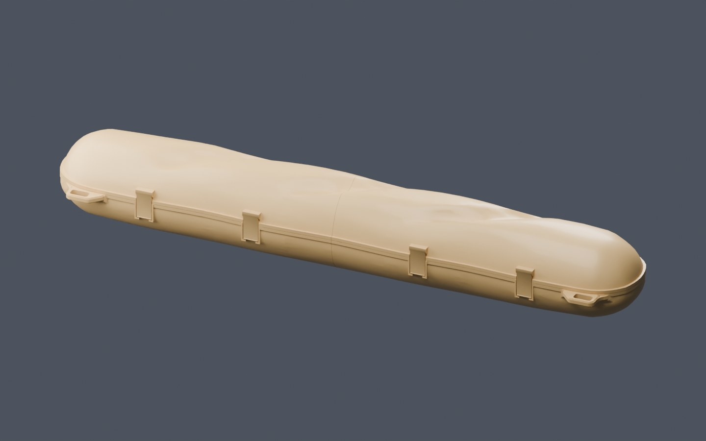
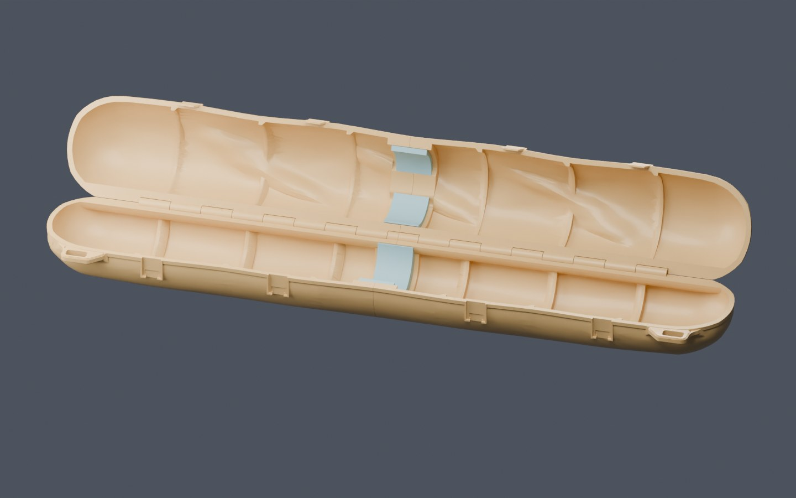

Baguette holder
Integrated hinge. Recessed latches. A clean center joint.
Loading model…
What changed
- Hinge follows the shell
- A continuous 9.2 mm spine replaces the deep exposed hinge cuts. The outer edge stays within the previous hinge outline, with a 4 mm captive pin and 0.4 mm radial clearance.
- Longer, recessed latches
- Four tapered 26 mm tongues use shallow lead-in ramps, a positive retaining shoulder, and a finger lip for release. The closed latches are unloaded in the CAD model.
- Flat center faces
- The large center bevel is removed. The two main segments meet at a 0.2 mm butt seam, aligned by one base sleeve and two lid keys inside the case.
- Solid rib connections
- The rib-to-shell unions are rebuilt to remove buried thin surfaces. Sampled crust walls are at least 1.53 mm; this is a sampled check, not a global wall-thickness guarantee.
Assembly decision to review: the three internal joiners are bonding parts. This revision requires a compatible adhesive after a dry fit; it does not retain the original snap-together center coupling.
Print & fit review
- 24 geometry checks passed.
- Every individual shell and joiner is one watertight solid.
- Released opening sweep checked every 2° from 0–180°, including joiners.
- 62 mm bore and 600 mm capsule clearance retained.
- Both main segments fit within a 300 × 320 × 325 mm envelope, including an 8 mm brim.
Both main segments slice successfully. Together, the offline estimates are about 30.5 hours and 963 g, before the joiners and fit coupons.
Prepared for a Bambu H2C, 0.4 mm nozzle, 0.20 mm layers and PLA. Local supports are required beneath latch undercuts; keep support out of the hinge bearings.
Start with the small hinge, latch, and joint coupons. Hinge coupons provide 0.3, 0.4 and 0.5 mm radial gaps. The final fit, opening force, durability, and bond strength still need physical testing.

